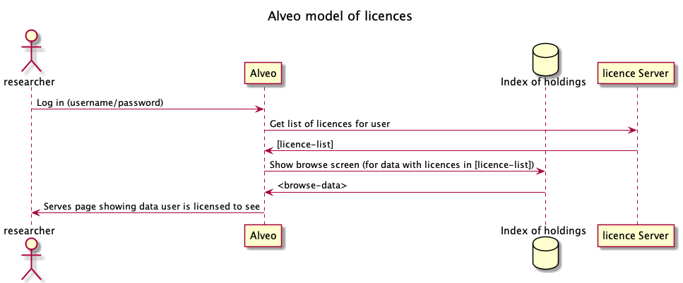
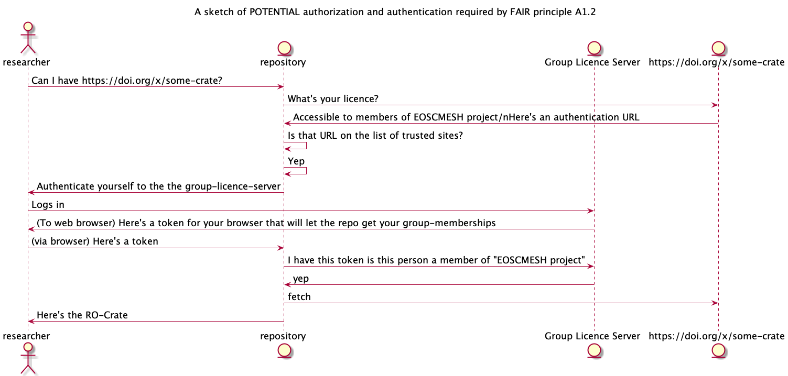
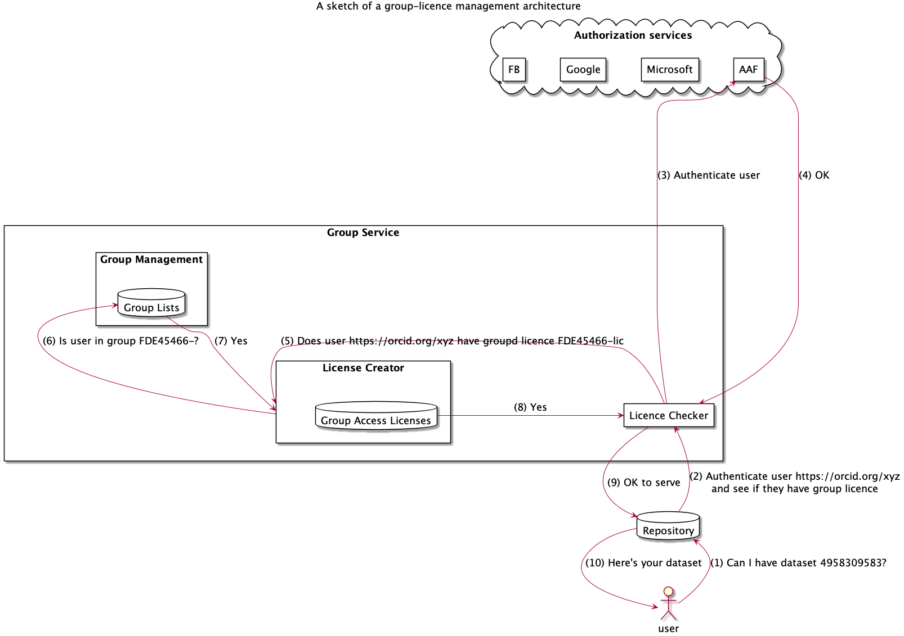

This is a work in progress post I'm looking for feedback on the substance - there's a comment box below, email me, or see me on twitter: @ptsefton.
I am posting this now because I have joined a pair of related projects as a senior technical advisor and an we will have to look at access-authorization to data on both - licenses will vary from open, to click-through agreements, to complex cultural restrictions such as TK Licenses;
Summary: Not all research data can be made openly available (for ethical, safety, privacy, commercial or other reasons) but a lot can reasonably be sent over the web to trusted parties. If we want to make it accessible (as per the "A" in the FAIR data principles) then at present each data repository/service has to handle its own access controls. In this post I argue that if we had a Group Service or Licence Service that allowed research teams to build their own groups and/or licences then the service could issue a Group Access Licence URLs. Other services such as repositories in a trusted relationship with the Group/Licence Service holding content with digital licences which had such URLs could do a redirect dance (like with oAuth and other authentication protocols), sending the users who request access to digital objects to the Group/Licence Service which could authenticate them and check if they have access rights then let the repository know whether or not to give them access.
In this post I will look at some missing infrastructure for doing FAIR data (Reminder: FAIR is Findable, Accessible, Interoperable, Reusable data) - and will cite the FAIR principles.
If a dataset can be released under an open licence then that's no problem but if data is only available for reuse under some special circumstances to certain users for certain purposes then the research sector lacks general-purpose infrastructure to support this. Tech infrastrucure aside, we do have a way of handling this legally. You specify these special conditions using a licence as per the FAIR principles.
R1.1. (Meta)data are released with a clear and accessible data usage licence
The licence might say (in your local natural language) "Members of international research project XYX can access this dataset". Or "contact us for a specific licence (and we'll add you to a license-holder group if approved)".
Now the dataset can be deposited in a repository, which will take care of some of the FAIR principles for you including the F-word stuff.
Findable
The first step in (re)using data is to find them. Metadata and data should be easy to find for both humans and computers. Machine-readable metadata are essential for automatic discovery of datasets and services, so this is an essential component of the FAIRification process.
F1. (Meta)data are assigned a globally unique and persistent identifier
F2. Data are described with rich metadata (defined by R1 below)
F3. Metadata clearly and explicitly include the identifier of the data they describe
F4. (Meta)data are registered or indexed in a searchable resource
Yes, you could somehow deal with all that with some bespoke software service, but the simplest solution is to use a repository, or if there isn't one, work with infrastructure people to set one up - there are a number of software solutions that can help provide all the needed services. The repository will typically issue persistent identifiers for digital objects and serve up data using a standarised communication protocol (usually) HTTP(S).
Accessible
Once the user finds the required data, they need to know how they can be accessed, possibly including authentication and authorisation.
A1. (Meta)data are retrievable by their identifier using a standardised communications protocol
A1.1 The protocol is open, free, and universally implementable
A1.2 The protocol allows for an authentication and authorization procedure, where necessary
A2. Metadata are accessible, even when the data are no longer available
But repository software can not be trusted to understand license text and thus cannot work out who to make non-open data available to - so what will (usually) happen is it will either just make the non-open data available only to the depositor and administrators. The default is to make it Inaccessible via what repository people call "mediated access" - ie you have to contact someone to ask for access and then they have to figure out how to get the data to you.
At the Australian Data Archive they have the "request access" part automated:
4 - DOWNLOADING DATA
To download open access data and documentation, click on the “Download” button next to the file you are interested in. Much of the data in the ADA collection has controlled access, denoted by a red lock icon next to the file. Files with controlled access require you to request access to the data, by clicking on the “Request Access” button. https://ada.edu.au/accessing-data/
In some cases the repository itself will have some kind of built in access control using groups, or licences or some-such. For example, the Alveo virtual lab funded by NeCTAR in Australia, on which I worked, has a local licence checker, as each collection has a licence. Some licences just require a click-through agreement, others are associated with lists of users who have paid money, or are blessed by a group-owner.
I'm not citing Alveo as a much-used or successful service, it was not, overall, a great success in terms of uptake, but I think it has a good data-licence architecture; there is a licence-component that was separate from the rest of the system. The licence checking sits in front of the "Findability" part of the data and the API - not much of that data is available without at least some kind of licence that users have to agree to.
This pattern makes a clear separation between the licence as an abstract, identifiable thing, and a service to keep track of who holds the licence.
Question is, could we do something like this at national or global scale?
We are part of the way there - we can authenticate users in a number of ways, eg by the Australian Access Federation (AAF) and equivalents around the world, and there are protocols that allow a service to authenticate using Google, Facebook, Github et al. These all rely on variants of a pattern where a user of service A is redirected to an authentication service B where they put in their password or a one-time key, and whatever other mechanism the IT department deem necessary, and then are redirected back to service A with an assurance from B that this person is who they say they are.
What we don't have (as far as I'm aware) is a general purpose protocol for checking whether someone holds a licence. A repository could redirect a web user to a Group Licence Server and the user could transact with the licence service, authenticate themselves (in whatever way that licence service supports) and then the licence service could check it's internal lists of who has what licence and then return it. If the license is just a click through then the user could to the clicking - or request access,or pay money or whatever is required.
(We are aware of the work on FAIR Digital Objects and the FDO Forum - it does say there that:
FAIR Digital Objects (FDO) provide a conceptual and implementation framework to develop scalable cross-disciplinary capabilities, deal with the increasing data volumes and their inherent complexity, build tools that help to increase trust in data, create mechanisms to efficiently operate in the domain of scientific assertions, and promote data interoperability.
Colleagues and I have started discussions with the folks there.)
Those of us who were around higher-ed-tech in the '00s in Australia will remember MAMS - the Meta Access Management system - the leader James Dalziel was at all the eResearch-ish conferences talking about this shared federation (that would allow you to log in to other people's systems (we got that - it's the aforementioned AAF), with fantastic user stories about being able to log into a data repository and then by virtue of the fact that you're a female anthropologist, gain access to some cultural resources (we didn't get that bit). I remember Kent Fitch then from the National Library, one of the team that build the national treasure Trove 😀 bursting that particular bubble over beers after one such talk. He asked: How do you identify an anthropologist? Answer - a university authentication system certainly can't.
I realised a long long time later that while you can't identify the anthropologists, or tell 'em apart from the ethnographers or ethnomusicologists etc that they can and make their own groups, via research projects, collaborations and scholarly societies. You could have a group that listed the members of a scholarly society and use that for certain kinds of access control, and you could, of course let the researchers self select people they want to share with - let them set up their groups.
What if we had a class of stand-alone service where anyone could set up a group and add users to it? A project lead could decide on what is an acceptable way to authenticate, via Academic Federations like AAF or ORCID, public services like Github or Facebook etc and then add a list of users via email addresses or other IDs. And what if there was a way to auto-populate that group by linking through to OSF groups, or Github organisations, Slack etc (all of which use different APIs and none of which know about licences in this sense as far as I know). This would be useful for groups of researchers who need access to storage, compute, and yes, datasets with particular licence provisions. There could be free-to-use group access for individuals and paid services for orgs like learned societies who can use the list to make deals with infrastructure providers for example. And there need not only be one of these services, they'd work well at a National level I think but could be more granular or discipline based.
(Does such a thing already exist? Did I miss it? Let me know in the comments below or on twitter - I'm @ptsefton)
We could do this something like the way modern authentication services work with a simple hand-off of a user to an authentication service, but with the addition of licence URL, to a service that says - yep I vouch for this person they have a licence to see the data.
The above interaction diagram is purely a fantasy of mine. I'm not an Internet Engineer - so I have probably made some horrible errors, please let me know.
Obviously this requires a trust-framework; repositories would have to trust the licence servers and vice-versa and these relationships would have to be time-limited and renewable. You wouldn't want to trust a service for longer than their domain registration for example in case someone else you don't trust buys the domain, that kind of thing. And you'd want some public key stuff happening so that transactions are signed (a further mitigation against domain squatters - they would presumably not have your private key).
And this is not an overly complicated application we're talking about - all access-controlled APIs already have to do some of this locally. It's the the governance - the trust federations that will take time and significant resources (so lets start now :-).
And while we're on the subject of trust - this scheme would work in the same way most research does - with trust in the people working on the projects - typically they have access to data and are trusted to keep it safe. Being a member of a project team in health research, for example often involves joining a host organization as an honorary staff member, and being subject to all its policies and procedures. Some research groups have high levels of governance; people are identified using things like nursing registrations, and other certifications; some are ad-hoc collections of people identified by a PI using any old-email address.
NOTE: for data that needs to be kept really really secure? Data that can never even be put on a hard drive and left on a bus - then this proposal is not the scheme for that data - that's where you'd be looking at a Secure eResearch Platform (SeRP) where the data lives in a walled garden and can be inspected only via a locked-down terminal application, or even stricter, you might only have secure on-site access to data that's air-gapped from any network.
Here's a sketch of some infrastructure. Essentially this is what happened inside Alveo - the question is can it be distributed so repositories can be de-coupled from authorization services?

Comments
comments powered by Disqus